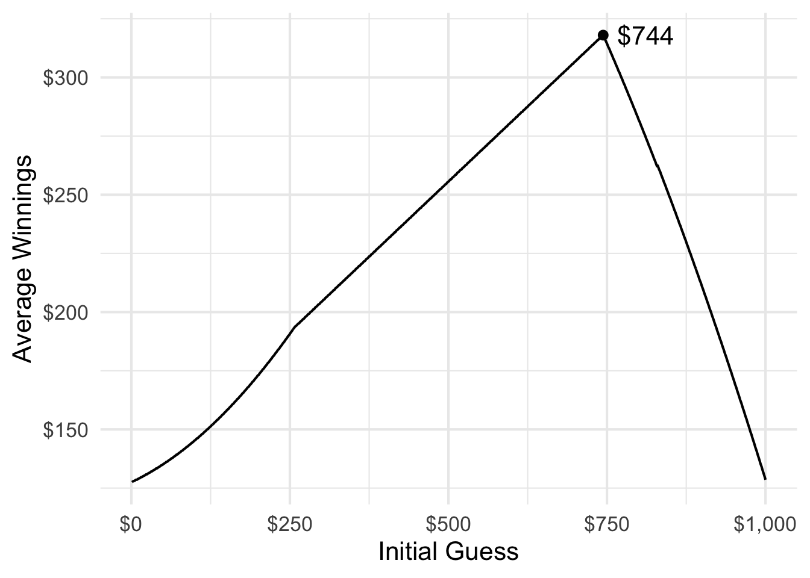
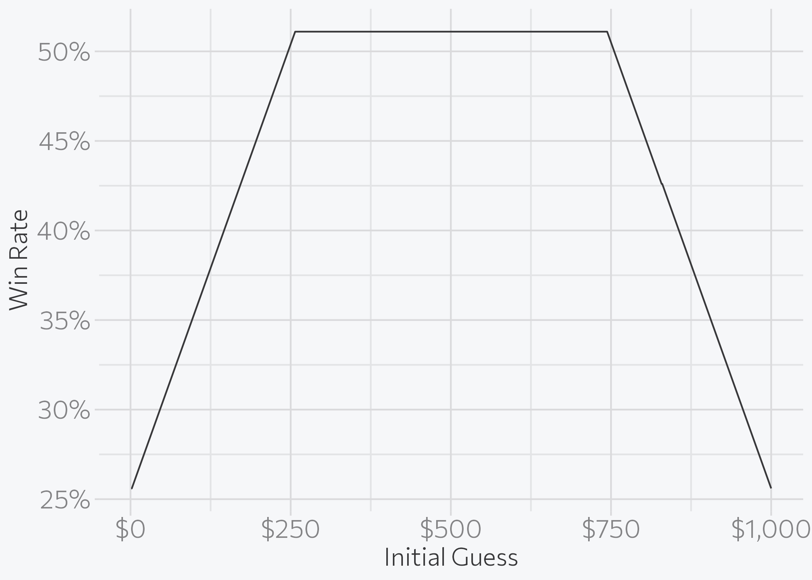
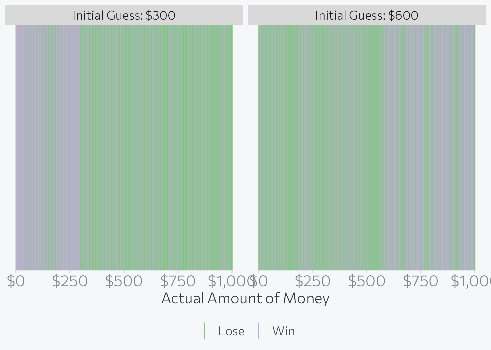
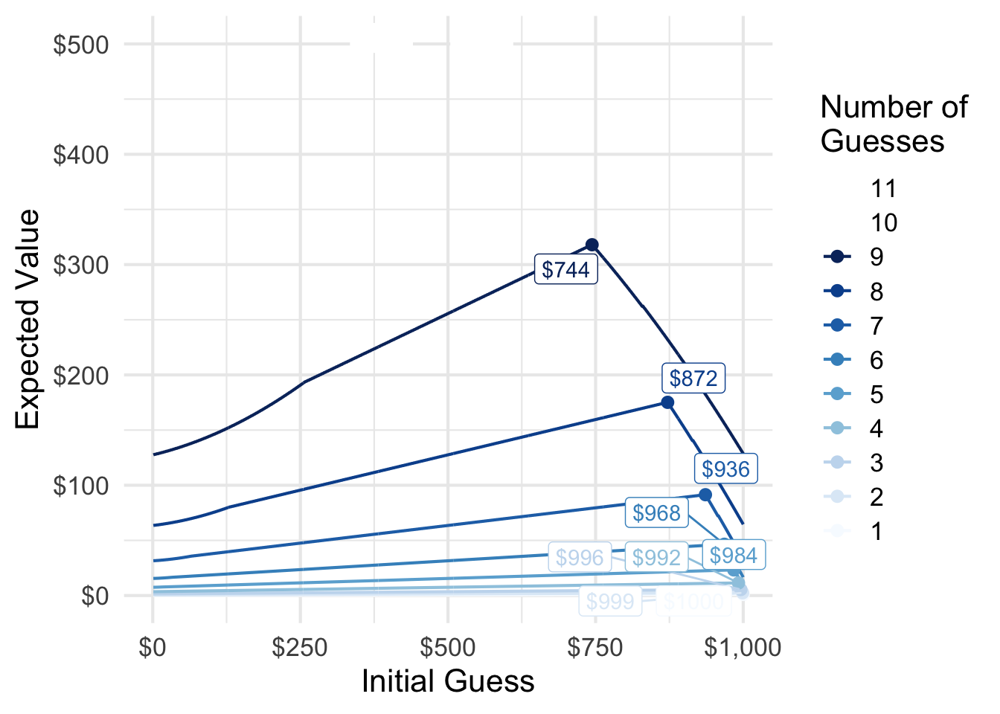
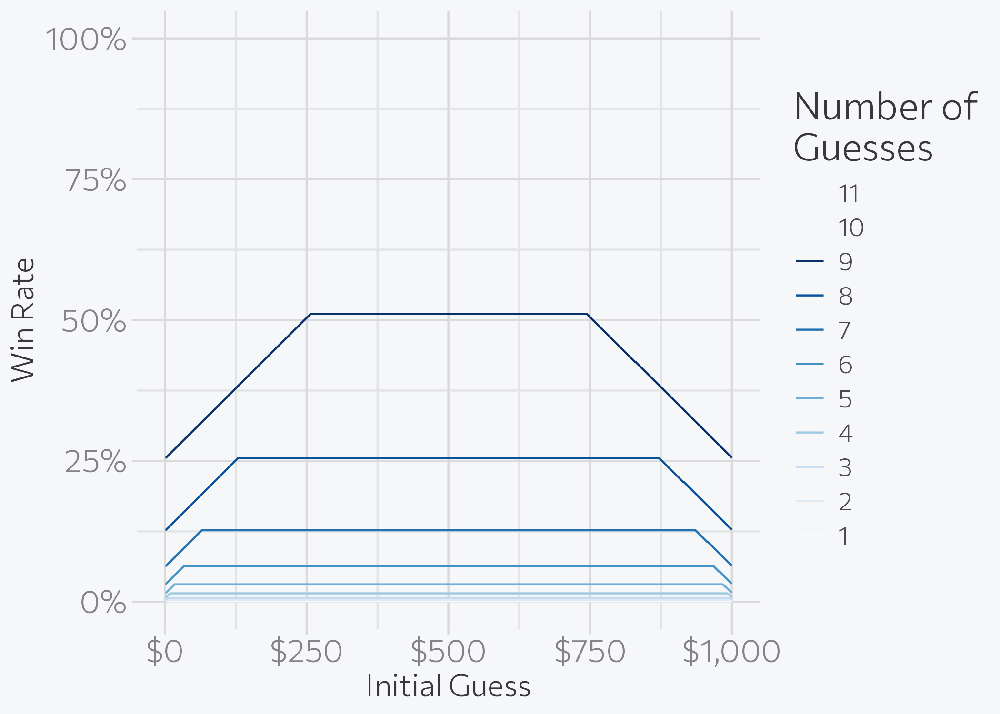

library(dplyr)
library(ggplot2)
library(ggrepel)
theme_set(brand_theme(16))
set.seed(123)
# function to guess money amount using strategy
guess_money <- function(actual, initial, n_tries = 9,
min_val = 1, max_val = 1000,
print_guess = FALSE) {
# set iterator
i <- 1
# while i is less than the max number of guesses, find the median value
# within the possible range. if guess is not correct, reset min_val or max_val
# depending on info trenchcoat man provides
while (i <= n_tries) {
if (i == 1) {
guess <- initial
} else {
guess <- round(mean(c(min_val, max_val)))
}
# print the guess if print_guess is TRUE
if (print_guess) cat(paste0("Guess Number ", i, ": $", guess), sep = "\n")
# if guess is correct, immediately exit the loop and return true
# if guess is not correct:
## if actual is higher than guess, change min_val to guess
## if actual is lower than guess, change max_val to guess
if (actual == guess) {
return(c(win = TRUE, round = i))
} else if (actual > guess) {
min_val <- guess
} else if (actual < guess) {
max_val <- guess
}
# iterate to next round if guess was incorrect
i <- i + 1
}
# at this point still have not guessed the money amount, so lose
# correct i since we didn't really guess the i-th time
return(c(win = FALSE, round = i - 1))
}Can You Best The Mysterious Man In The Trench Coat?
r
riddler
The latest Riddler puzzle on FiveThirtyEight: A man in a trench coat approaches you and pulls an envelope from his pocket. He tells you that it contains a sum of money in bills, anywhere from $1 up to $1,000.
NoteCode updated
This post was originally written in 2016 and was last rendered under R 4.0.4. The code has been minimally updated to run under R 4.6.1: dplyr::tbl_df(), defunct since dplyr 1.0.0, was replaced with tibble::as_tibble(). The analysis and its conclusions are unchanged.
The latest Riddler puzzle on FiveThirtyEight:
A man in a trench coat approaches you and pulls an envelope from his pocket. He tells you that it contains a sum of money in bills, anywhere from $1 up to $1,000. He says that if you can guess the exact amount, you can keep the money. After each of your guesses he will tell you if your guess is too high, or too low. But! You only get nine tries. What should your first guess be to maximize your expected winnings?
My solution is based on a basic, yet elegant, strategy. The first guess can be selected arbitrarily between $1 and $1000 - let’s say here that my first guess is $500. If my guess is correct, then I win (yay!). But since I have just a 1 in 1000 probability of guessing correctly on the first try, I’m probably not done. So if the trenchcoat man says the actual value is higher, my next guess will be the midway point between my first guess and the maximum possible value. Initially, this will be $1000. If the trenchcoat man says the actual value is lower, my next guess will be the midway point between my first guess and the minimum possible value ($1).
So let’s say my guess is too low and the actual value is higher. My second guess would be $750. If I’m correct, I win. If the actual amount is lower, my next guess will be the midpoint between $500 and $750 - remember that I now know it must be within this range.
I can iterate through this process with up to 9 guesses. At that point, if I still have not guessed the amount, I lose.
To simulate this process in R, I wrote the following function
As an example, let’s say the actual amount of money is $736 and my first guess is $500. Here’s how that would play out:
guess_money(actual = 736, initial = 500, print_guess = TRUE)Guess Number 1: $500
Guess Number 2: $750
Guess Number 3: $625
Guess Number 4: $688
Guess Number 5: $719
Guess Number 6: $734
Guess Number 7: $742
Guess Number 8: $738
Guess Number 9: $736 win round
1 9 This tells me the different guesses, as well as the fact that I eventually won (win = 1) in the ninth round.
Of course, there is no reason why I have to choose $500 for my initial guess. What if I instead started at $1?
guess_money(actual = 736, initial = 1, print_guess = TRUE)Guess Number 1: $1
Guess Number 2: $500
Guess Number 3: $750
Guess Number 4: $625
Guess Number 5: $688
Guess Number 6: $719
Guess Number 7: $734
Guess Number 8: $742
Guess Number 9: $738 win round
0 9 Clearly not the best initial guess. I wasted my first guess and ended up not winning the money. But how do we know which initial guess provides the highest expected value? That is, the initial guess that maximizes my potential winnings regardless of the actual amount of money held by the trenchcoat man?
To answer that question, I calculate the results for every potential initial guess (each integer between 1 and 1000) and every potential actual amount of money (again, each integer between 1 and 1000). This results in 1,000,000 different potential game states. From there, we can calculate the average winnings for each initial guess. These average winnings are the expected value, or what we might expect to win if we always use that amount for the initial guess.
In order to do this in R, I use the Vectorize function to expand my original function to work with multiple game states.
min_val <- 1
max_val <- 1000
actual_vals <- min_val:max_val
guess_vals <- min_val:max_val
data <- expand.grid(actual = actual_vals, guess = guess_vals) %>%
as_tibble()
data# A tibble: 1,000,000 × 2
actual guess
<int> <int>
1 1 1
2 2 1
3 3 1
4 4 1
5 5 1
6 6 1
7 7 1
8 8 1
9 9 1
10 10 1
# ℹ 999,990 more rowsresult <- with(data, Vectorize(guess_money)(actual = actual,
initial = guess,
min_val = min_val,
max_val = max_val))
both <- bind_cols(data, t(result) %>%
as.data.frame())
both# A tibble: 1,000,000 × 4
actual guess win round
<int> <int> <dbl> <dbl>
1 1 1 1 1
2 2 1 0 9
3 3 1 0 9
4 4 1 1 9
5 5 1 0 9
6 6 1 0 9
7 7 1 0 9
8 8 1 1 8
9 9 1 0 9
10 10 1 0 9
# ℹ 999,990 more rowsNow that we have all the potential outcomes of the game, I can calculate the expected winnings for each initial guess and find the best starting point.
exp_val <- both %>%
group_by(guess) %>%
summarize(
win_rate = mean(win),
exp_val = mean(actual * win)
) %>%
ungroup()
exp_val# A tibble: 1,000 × 3
guess win_rate exp_val
<int> <dbl> <dbl>
1 1 0.256 128.
2 2 0.256 128.
3 3 0.257 128.
4 4 0.258 128.
5 5 0.259 128.
6 6 0.26 128.
7 7 0.261 129.
8 8 0.262 129.
9 9 0.263 129.
10 10 0.264 129.
# ℹ 990 more rowsexp_val_max <- exp_val %>%
filter(exp_val == max(exp_val))
ggplot(exp_val, aes(guess, exp_val)) +
geom_line() +
geom_point(data = exp_val_max) +
geom_text(
data = exp_val_max, aes(label = paste0("$", guess)),
hjust = -.25
) +
scale_x_continuous(labels = scales::dollar) +
scale_y_continuous(labels = scales::dollar) +
labs(
x = "Initial Guess",
y = "Average Winnings"
)
So if you get up to nine guesses, your first guess should be $744. Why is it not $500? Shouldn’t that be optimal, since it minimizes the potential range of values for which you’ll need to initially account? Well, not quite.
There are a range of initial guesses that provide you the same overall win rate.
both %>%
group_by(guess) %>%
summarize(win_rate = mean(win)) %>%
ggplot(aes(guess, win_rate)) +
geom_line() +
scale_x_continuous(labels = scales::dollar) +
scale_y_continuous(labels = scales::percent) +
labs(
x = "Initial Guess",
y = "Win Rate"
)
The win rate for initially guessing $300 is the same as for initially guessing $600 - 51.1%. However the expected value for initially guessing $300 is just $204, compared to initially guessing $600 ($281). Which actual values can you win before you run out of attempts?
both %>%
filter(guess == 300 | guess == 600) %>%
mutate(
win = factor(win, levels = 0:1, labels = c("Lose", "Win")),
guess = factor(guess, labels = c(
"Initial Guess: $300",
"Initial Guess: $600"
))
) %>%
ggplot(aes(x = actual, color = win)) +
facet_wrap(~guess) +
geom_vline(aes(xintercept = actual, color = win)) +
scale_color_brewer(type = "qual") +
labs(
x = "Actual Amount of Money",
color = NULL
) +
scale_x_continuous(labels = scales::dollar) +
theme(legend.position = "bottom") +
guides(color = guide_legend(override.aes = list(size = 3)))
This is the crux: lower starting guesses allow you to win at the same rate, but the value of each set of winnings is lower.
More (or Fewer) Guesses
But what if we modify the game rules so that you get fewer guesses? Or more guesses? How does the number of attempts change the optimal starting guess?
Here I do the same thing as before, but I vary the number of tries the player gets for each set of simulations.
guess_money_mult <- function(n_tries = 1, min_val = 1, max_val = 1000) {
actual_vals <- min_val:max_val
guess_vals <- min_val:max_val
data <- expand.grid(actual = actual_vals, guess = guess_vals) %>%
as_tibble()
result <- with(data, Vectorize(guess_money)(actual = actual,
initial = guess,
n_tries = n_tries,
min_val = min_val,
max_val = max_val))
both <- bind_cols(data, t(result) %>%
as.data.frame()) %>%
mutate(n_tries = n_tries)
return(both)
}
tries_all <- lapply(1:11, function(x) guess_money_mult(n_tries = x)) %>%
bind_rows()tries_all_exp <- tries_all %>%
mutate(n_tries = factor(n_tries)) %>%
group_by(guess, n_tries) %>%
summarize(
win_rate = mean(win),
exp_val = mean(actual * win)
)`summarise()` has regrouped the output.
ℹ Summaries were computed grouped by guess and n_tries.
ℹ Output is grouped by guess.
ℹ Use `summarise(.groups = "drop_last")` to silence this message.
ℹ Use `summarise(.by = c(guess, n_tries))` for per-operation grouping
(`?dplyr::dplyr_by`) instead.tries_all_exp_max <- tries_all_exp %>%
group_by(n_tries) %>%
filter(exp_val == max(exp_val)) %>%
arrange(-exp_val) %>%
slice(1)
ggplot(tries_all_exp, aes(guess, exp_val,
group = n_tries, color = n_tries
)) +
geom_line() +
geom_point(data = tries_all_exp_max) +
geom_label_repel(
data = tries_all_exp_max,
aes(label = paste0("$", guess)),
show.legend = FALSE
) +
scale_x_continuous(labels = scales::dollar) +
scale_y_continuous(labels = scales::dollar) +
scale_color_brewer(type = "seq", guide = guide_legend(reverse = TRUE)) +
labs(
x = "Initial Guess",
y = "Expected Value",
color = "Number of\nGuesses",
group = "Number of\nGuesses"
)Warning in RColorBrewer::brewer.pal(n, pal): n too large, allowed maximum for palette Blues is 9
Returning the palette you asked for with that many colorsWarning: Removed 2000 rows containing missing values or values outside the scale range
(`geom_line()`).Warning: Removed 2 rows containing missing values or values outside the scale range
(`geom_point()`).
The fewer guesses you receive, the higher your initial guess must be to maximize your expected winnings. If you had 12 11 or more guesses, it simply does not matter what your initial guess is: you can always win using my proposed strategy.
Update: Only Need 11 Guesses
ggplot(tries_all_exp, aes(guess, win_rate,
group = n_tries, color = n_tries
)) +
geom_line() +
scale_x_continuous(labels = scales::dollar) +
scale_y_continuous(labels = scales::percent) +
scale_color_brewer(type = "seq", guide = guide_legend(reverse = TRUE)) +
labs(
x = "Initial Guess",
y = "Win Rate",
color = "Number of\nGuesses",
group = "Number of\nGuesses"
)Warning in RColorBrewer::brewer.pal(n, pal): n too large, allowed maximum for palette Blues is 9
Returning the palette you asked for with that many colorsWarning: Removed 2000 rows containing missing values or values outside the scale range
(`geom_line()`).
11 is the minimum number of guesses needed to guarantee victory.
Update 2: $744 or $745?
Others have found the optimal starting guess to be $745. This discrepancy is based on how you round each guess. The default R approach to rounding is complicated, but adheres to international standards.
Original rounding method
min_val <- 1
max_val <- 1000
actual_vals <- min_val:max_val
guess_vals <- min_val:max_val
data <- expand.grid(actual = actual_vals, guess = 744:745) %>%
as_tibble()
result <- with(data, Vectorize(guess_money)(actual = actual,
initial = guess,
min_val = min_val,
max_val = max_val))
bind_cols(data, t(result) %>%
as.data.frame()) %>%
group_by(guess) %>%
summarize(
win_rate = mean(win),
exp_val = mean(actual * win)
) %>%
ungroup() %>%
filter(guess == 744 | guess == 745)# A tibble: 2 × 3
guess win_rate exp_val
<int> <dbl> <dbl>
1 744 0.511 318.
2 745 0.510 317.Always round down
guess_money_floor <- function(actual, initial, n_tries = 9,
min_val = 1, max_val = 1000,
print_guess = FALSE) {
# set iterator
i <- 1
# while i is less than the max number of guesses, find the median value
# within the possible range. if guess is not correct, reset min_val or max_val
# depending on info trenchcoat man provides
while (i <= n_tries) {
if (i == 1) {
guess <- initial
} else {
guess <- floor(mean(c(min_val, max_val)))
}
# print the guess if print_guess is TRUE
if (print_guess) cat(paste0("Guess Number ", i, ": $", guess), sep = "\n")
# if guess is correct, immediately exit the loop and return true
# if guess is not correct:
## if actual is higher than guess, change min_val to guess
## if actual is lower than guess, change max_val to guess
if (actual == guess) {
return(c(win = TRUE, round = i))
} else if (actual > guess) {
min_val <- guess
} else if (actual < guess) {
max_val <- guess
}
# iterate to next round if guess was incorrect
i <- i + 1
}
# at this point still have not guessed the money amount, so lose
# correct i since we didn't really guess the i-th time
return(c(win = FALSE, round = i - 1))
}
result <- with(data, Vectorize(guess_money_floor)(actual = actual,
initial = guess,
min_val = min_val,
max_val = max_val))
bind_cols(data, t(result) %>%
as.data.frame()) %>%
group_by(guess) %>%
summarize(
win_rate = mean(win),
exp_val = mean(actual * win)
) %>%
ungroup() %>%
filter(guess == 744 | guess == 745)# A tibble: 2 × 3
guess win_rate exp_val
<int> <dbl> <dbl>
1 744 0.511 318.
2 745 0.510 317.Always round up
guess_money_ceiling <- function(actual, initial, n_tries = 9,
min_val = 1, max_val = 1000,
print_guess = FALSE) {
# set iterator
i <- 1
# while i is less than the max number of guesses, find the median value
# within the possible range. if guess is not correct, reset min_val or max_val
# depending on info trenchcoat man provides
while (i <= n_tries) {
if (i == 1) {
guess <- initial
} else {
guess <- ceiling(mean(c(min_val, max_val)))
}
# print the guess if print_guess is TRUE
if (print_guess) cat(paste0("Guess Number ", i, ": $", guess), sep = "\n")
# if guess is correct, immediately exit the loop and return true
# if guess is not correct:
## if actual is higher than guess, change min_val to guess
## if actual is lower than guess, change max_val to guess
if (actual == guess) {
return(c(win = TRUE, round = i))
} else if (actual > guess) {
min_val <- guess
} else if (actual < guess) {
max_val <- guess
}
# iterate to next round if guess was incorrect
i <- i + 1
}
# at this point still have not guessed the money amount, so lose
# correct i since we didn't really guess the i-th time
return(c(win = FALSE, round = i - 1))
}
result <- with(data, Vectorize(guess_money_ceiling)(actual = actual,
initial = guess,
min_val = min_val,
max_val = max_val))
bind_cols(data, t(result) %>%
as.data.frame()) %>%
group_by(guess) %>%
summarize(
win_rate = mean(win),
exp_val = mean(actual * win)
) %>%
ungroup() %>%
filter(guess == 744 | guess == 745)# A tibble: 2 × 3
guess win_rate exp_val
<int> <dbl> <dbl>
1 744 0.511 318.
2 745 0.511 319.Session Info
─ Session info ───────────────────────────────────────────────────────────────
setting value
version R version 4.6.1 (2026-06-24)
os macOS Tahoe 26.6.1
system aarch64, darwin23
ui X11
language (EN)
collate en_US.UTF-8
ctype en_US.UTF-8
tz America/New_York
date 2026-08-12
pandoc 3.4 @ /usr/local/bin/ (via rmarkdown)
quarto 1.10.18 @ /usr/local/bin/quarto
─ Packages ───────────────────────────────────────────────────────────────────
! package * version date (UTC) lib source
P brand.yml 0.1.0 2025-11-06 [?] RSPM
P cli 3.6.6 2026-04-09 [?] RSPM
P codetools 0.2-20 2024-03-31 [?] CRAN (R 4.6.1)
P digest 0.6.39 2025-11-19 [?] RSPM
P dplyr * 1.2.1 2026-04-03 [?] RSPM
P evaluate 1.0.5 2025-08-27 [?] RSPM
P farver 2.1.2 2024-05-13 [?] RSPM
P fastmap 1.2.0 2024-05-15 [?] RSPM
P generics 0.1.4 2025-05-09 [?] RSPM
P ggplot2 * 4.0.3 2026-04-22 [?] RSPM
P ggrepel * 0.9.8 2026-03-17 [?] RSPM
P glue 1.8.1 2026-04-17 [?] RSPM
P gtable 0.3.6 2024-10-25 [?] RSPM
P htmltools 0.5.9 2025-12-04 [?] RSPM
P jsonlite 2.0.0 2025-03-27 [?] RSPM
P knitr 1.51 2025-12-20 [?] RSPM
P labeling 0.4.3 2023-08-29 [?] RSPM
P lifecycle 1.0.5 2026-01-08 [?] RSPM
P magrittr 2.0.5 2026-04-04 [?] RSPM
P otel 0.2.0 2025-08-29 [?] RSPM
P pillar 1.11.1 2025-09-17 [?] RSPM
P pkgconfig 2.0.3 2019-09-22 [?] RSPM
P prismatic 1.1.2 2024-04-10 [?] RSPM
P R6 2.6.1 2025-02-15 [?] RSPM
P ragg 1.5.2 2026-03-23 [?] RSPM
P RColorBrewer 1.1-3 2022-04-03 [?] RSPM
P Rcpp 1.1.2 2026-07-05 [?] RSPM
renv 1.2.4 2026-08-03 [1] RSPM (R 4.6.0)
P rlang 1.3.0 2026-07-05 [?] RSPM
P rmarkdown 2.31 2026-03-26 [?] RSPM
P S7 0.2.2 2026-04-22 [?] RSPM
P scales 1.4.0 2025-04-24 [?] RSPM
P sessioninfo 1.2.4 2026-06-04 [?] RSPM
P systemfonts 1.3.2 2026-03-05 [?] RSPM
P textshaping 1.0.5 2026-03-06 [?] RSPM
P tibble 3.3.1 2026-01-11 [?] RSPM
P tidyselect 1.2.1 2024-03-11 [?] RSPM
P vctrs 0.7.3 2026-04-11 [?] RSPM
P withr 3.0.3 2026-06-19 [?] RSPM
P xfun 0.60 2026-07-09 [?] RSPM
P yaml 2.3.12 2025-12-10 [?] RSPM
[1] /Users/bcs88/Projects/personal-site/renv/library/macos/R-4.6/aarch64-apple-darwin23
[2] /Users/bcs88/Library/Caches/org.R-project.R/R/renv/sandbox/macos/R-4.6/aarch64-apple-darwin23/46003b10
* ── Packages attached to the search path.
P ── Loaded and on-disk path mismatch.
──────────────────────────────────────────────────────────────────────────────